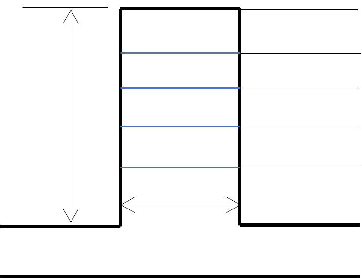

SIMPLE SURGE SHAFT
DESIGN RESULT
Calculated Diameter of Shaft (Ds): m
Normal Water level in Surge Shaft (NWLs): m
Maximum water level (MWL): m
Upsurge level (USL): m
Downsurge level (DSL): m
Tunnel Crown Level (TCL): m

Ds = m
NWL = m
MWL = m
USL = m
DSL = m
TCL = m
Top = m
H = m